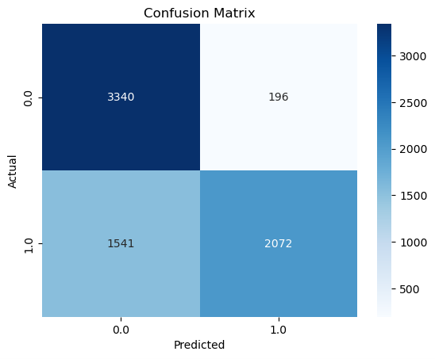
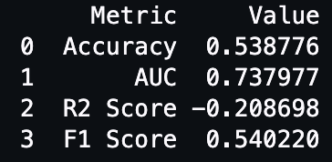
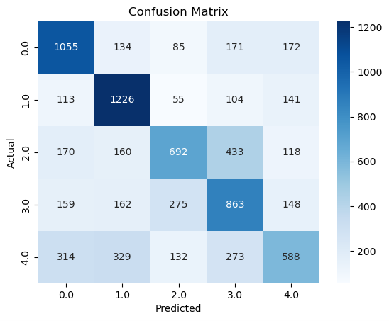

Reddit Content Dynamics and User Engagement Optimization (ML)
Note:Link to the source code - 1
Note:Link to the source code - 2
Note:Link to the source code - 3
Executive Summary
With a machine learning focus, our tasks in this realm revolve around optimizing content creation and user engagement within the Reddit community. By using ML models to predict whether iPhone-related comments will be stickied, the Reddit platform can better manage and highlight valuable content. For users, this means easier access to and discovery of valuable discussions, improving information availability and quality. For Apple, it offers a better understanding of user interests and emotional inclinations toward specific topics, aiding in adjusting and improving products or services. An iPhone comment score prediction model provides insights into user sentiments and opinions on specific topics. This helps Apple gain deeper insights into how users perceive their products and services, enabling more targeted adjustments to product strategies or service improvements. Constructing models for annotating Reddit posts contributes to enhancing user experience and platform content management. Accurately labeling posts within subreddit categories allows users to more easily find content of interest. Simultaneously, it provides vital insights for companies like Apple into user interests and behaviors, guiding product development and marketing strategies. The application of these ML models can elevate user experiences, assist businesses in understanding user needs and feedback better, thereby providing users with higher-quality content and services. Moreover, it guides companies to make wiser decisions in product development and marketing.
Post Popularity Prediction (ML 1)
A Reminder for Our Business Goal: Predicting Popularity of Posts in the iPhone Subsection. By analyzing various post features we intend to create a model capable of distinguishing between popular posts. This model will be a valuable tool for understanding the factors that contribute to a post's success and enhancing user experience within the iPhone community.
Analysis:
To predict the popularity of posts in iPhone Reddit subreddits, we used a data-driven approach. This involves processing post characteristics from 2022 to 2023 and applying a decision tree regression model to predict post popularity. We carefully transformed post attributes into quantifiable vectors, trained various prediction models, and optimized their accuracy. Let’s explore the findings of this model, specifically how different features such as “pinned” status, editing, self-post recognition, posting time, and content restrictions relate to the likelihood of a post becoming popular in a community.
We trained many models, but due to running time and accuracy reasons, we chose to show the results of the logistic regression model here. The prediction result of the logistic regression model is 0.7731365159128978. The following is the impact index of different attributes on post popularity in the logistic regression model:
| Feature | Coefficient |
|---|---|
| stickied_int | 19.48034014033475 |
| edited_int | 0.739907124805156 |
| is_self_int | 0.2168240866027578 |
| hour | 0.009130504845957588 |
| day_of_week | -0.005687518937613438 |
| Features | -0.029843402129460316 |
| Locked_int | -0.6851923857361955 |
| over_18_int | -0.7377361318639629 |
In order to more easily see the difference in results, we visualize it.
Obviously, we can see that Stickied_int has the highest index, a positive number of 19.480. This shows that there is a significant positive correlation between a post being pinned to the top and its popularity. This feature has the highest coefficient, indicating that once a post is pinned to the top, it is likely to gain greater popularity.
Since the influence of Stickied_int is too strong, we delete the Stickied_int attribute here and then observe the two other attributes.
After removing the biggest influencing factors, we continue to observe:
- edited_int (0.7399) and is_self_int (0.2168): Whether a post has been edited (edited) and whether it is original content (is_self) also positively correlate with popularity. Although their impact is not as pronounced as that of stickied posts, they still indicate a positive role of editing and original content in enhancing a post’s popularity.
- hour (0.0091), day_of_week (-0.0057), and features (-0.0298): The timing of the post (hour and day of the week) and the TF-IDF score of the text content have only minor impacts on a post’s popularity. These factors may play some role but are not decisive in determining whether a post becomes popular.
- locked_int (-0.6852) and over_18_int (-0.7377): Whether a post is locked (locked) and whether it contains adult content (over_18) show a negative correlation with popularity. This suggests that posts that are locked and those with adult content tend to be less popular, possibly due to their limited visibility and acceptability.
Analyzing how different attributes affect post popularity can help users develop their posting strategies. Understanding the impact of different post attributes can enable users to obtain information that is more relevant to their needs.
Top Comment Prediction Model (ML 2)
A Reminder for Our Business Goal: Determine whether a comment will be stickied.
Analysis:
In ML 2 task, we aimed to construct a model for predicting whether a comment would be stickied. To achieve this, we utilized scores for sentiment, score, controversiality, and comment type (top 5 subreddit). For "score", scores less than 0 were labeled as low, scores equal to 0 were labeled as medium, and scores greater than 0 were labeled as high. For "controversiality", a value of 0 was marked as False, and a value of 1 was marked as True. Additionally, we converted the "stickied" column from boolean to string. Subsequently, we selected the portion of the "sentiment" column that was positive or negative, dropping any empty or NA values. Following this, we split the dataset into training, testing, and validation subsets. Moving on to label processing, we used StringIndexer to convert categorical columns into numerical indices, assigning unique indices to each category. We then transformed some indices into binary vectors using OneHotEncoder. Next, we assembled these features into a single vector using VectorAssembler, creating a feature vector suitable for machine learning models. Subsequently, we created a classification model using "stickied_result" as labels and "features" as features, employing a Random Forest Classifier for classification. After classification, we reverted the numerical predictions back to the original labels using IndexToString. Finally, we evaluated our ML 2 model using Accuracy, Confusion Matrix, F1 score, and R-squared score. However, since ML 3 task is a classification task, the R-squared score is only for reference and is not analyzed.
Based on our results, the accuracy is high (0.757), and the F1 score is also impressive (0.7487). This suggests that our machine learning model excels in accurately predicting whether a post will be stickied. This information can offer Reddit users valuable insights for their writing. For instance, if users desire to have their post stickied, consider testing it with our model to enhance their chances.
Accuracy = 0.757029
F1 Score: 0.748658
R2 Score: 0.028003
Smart Automatic Classification System (ML 3)
A Reminder for Our Business Goal: Identify the most relevant subreddit for a Reddit post.
Analysis:
A post being labeled with the correct tag is crucial. By correctly tagging posts with their respective subreddit, it can enhance the content classification and search experience on the Reddit platform. This enables users to easily find topics and information of their interest. Moreover, labeling posts discussing iPhones with appropriate tags can assist Apple in better understanding user interests and opinions, providing insights for the development of future versions.
Our model selects the top 5 subreddits with the most comments as labels. We gathered 8,000 comments from each subreddit for training the model. Perhaps due to the limited quantity of training data, the model achieves only a 54% accuracy rate. However, given the substantial variance in discussion counts among subreddits, using more data could bias the model toward favoring the subreddit with the highest occurrence in the training data
